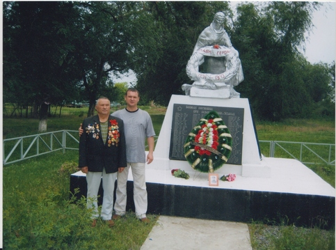

Долгий путь к могиле отца и деда
 Давно собирался и долго ждал того дня, когда смогу поехать на могилу отца, похороненного далеко от родных мест, в братской могиле, где лежат 1787 бойцов и командиров Красной Армии, отдавших жизнь на фронте Великой Отечественной войны 1941-1945 гг. за нас всех живущих сейчас. Давно собирался и долго ждал того дня, когда смогу поехать на могилу отца, похороненного далеко от родных мест, в братской могиле, где лежат 1787 бойцов и командиров Красной Армии, отдавших жизнь на фронте Великой Отечественной войны 1941-1945 гг. за нас всех живущих сейчас.
Мне говорили: «Зачем едешь, ведь так далеко, в твои-то годы, да к тому же очень дорого, не в советское время – пропадешь».
Но меня не остановить. Твердо решил, что обязательно поеду, отец меня ждет…
Детство – это время, которое навсегда запоминает наше сердце. Да-да, именно сердце, через которое прошли первые, а значит и самые яркие чувства и образы, хранит воспоминания о далеких прошедших годах.
Я родился за пять с половиной лет до начала Великой Отечественной войны. Одним из самых первых образов, хранившимся в моем сердце, стал образ отца. Считается, что человек начинает помнить себя с 3-х – 4-х лет. Я до сего дня помню, как отец, уходя на фронт, взял меня на руки, прижал к себе и поцеловал.
Больше я никогда не узнаю отцовской любви и ласки. 23 января 1943 года красноармеец 11 гвардейской механизированной бригады Мелегов Борис Филиппович, уроженец поселка Касаткино Горьковской области, председатель Муравьихинского сельского совета депутатов трудящихся, 27 лет от роду, погибает под городом Ростов-на Дону, защищая Отечество – СССР и мое детство. Те немногие фотографии, что остались в моем альбоме, хранят его образ и по сей день. Давно уже стали взрослыми мои дети, подрастают и выросли четверо внуков, а отец, их дед, прадед навсегда останется 27-летним.
Наконец-то я «вырвался» из поселка Славный и мы с сыном Андреем едем в г. Ростов-на-Дону. От Ростова до хутора Усьман 70 км. Местные автобусы ходят редко, надо ждать и ждать, а времени мало. Решился на такси, там оно нас подождало, чтобы возвратиться в Ростов к поезду. И вот мы у братской могилы отца, деда и могилы красноармейцев, воевавших с отцом и погибших в январе 1943 года.
Мы всей семьей впервые посетили братскую могилу в 1974 году, будучи в очередном отпуске. Тогда это было просто и доступно. И только через 38 лет снова «встретились» с отцом и его боевыми товарищами.
Нас у братской могилы опекали учителя школы хутора Усьман. Добрые и отзывчивые люди: директор школы Нина Ивановна Ратникова, директор музея Усьманской школы Елизавета Брониславовна Бурим. Они подробно в хронологической последовательности рассказали нам о сражении по освобождению г. Ростов-на-Дону, о боях на территории Багаевского района, которое были в январе 1943 года. В боях участвовали войска Степного (затем он был преобразован в Южный) фронта под командованием генерала, в последующем маршала Советского Союза Родиона Яковлевича Малиновского. Много было сказано у братской могилы.
Учителя спрашивали меня об отце, кто он такой, кем работал до войны, что писал в письмах с фронта. Рассказал со слов мамы и письмам отца, которые я когда-то держал в своих руках, читал их короткие строки, написанные химическим карандашом. Эти письма-треугольники, потом, к сожалению, у мамы пропали. Поэтому больше пересказывал со слов мамы Анны Сергеевны, деда Филиппа Трофимовича, да и других старших членов нашей большой семьи.
Нам с сыном учителя разрешили положить Славнинскую землицу на братскую могилу, которую я высыпал из платочка и положил землицу с могилы отца и его товарищей в тот же платочек. Эту землицу я высыпал 22 июня 2012 года в День памяти и скорби у памятника «Последний выстрел» в поселке Славный во время митинга у плиты «Никто не забыт, ничто не забыто» с разрешения жителей поселка.
Мы, я и сын, возложили цветы отцу и всем погибшим воинам, захороненным в братской могиле на хут. Усьман.
Стою у могилы отца и думаю: «Какой же я неблагодарный, что так редко бываю у тебя, отец. Это очень плохо, какой же я сын, недостойный сын. Прости отец… все работа да работа, и заглянуть к тебе некогда было. Но мы, отец, делаем ту работу, которую вы планировали, собирались делать, когда вернетесь с Великой Победой. Но все же прости, прости, отец…»
В. Б. Мелегов, пос. Славный, Торжокский р-н. |